Art Party — What started as a late-night spark turned into a tradition—hundreds of pieces created, countless joyous nights shared, and the essential fuel for our weeks of writing and recording. This work captures a moment where we could put our guards down and just enjoy the process. Here is a collection of works from close friends and members of The Letter Yellow, created after hours at Songwriter Factory in Greenpoint, Brooklyn.
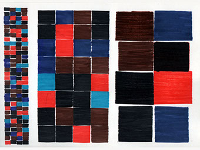
Man vs. Machine
By: Mike Thies
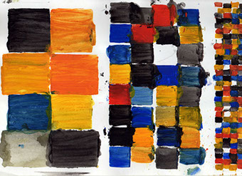
Man vs. machine side b
By: Mike Thies
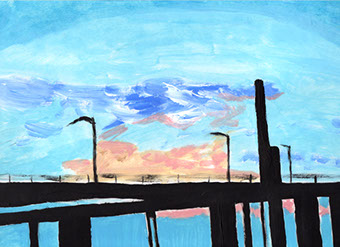
Bridgetown USA
By: Randy Bergida
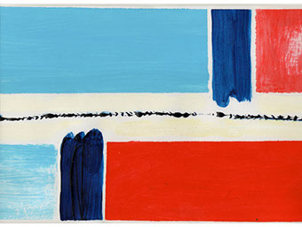
Flag
By: Randy Bergida
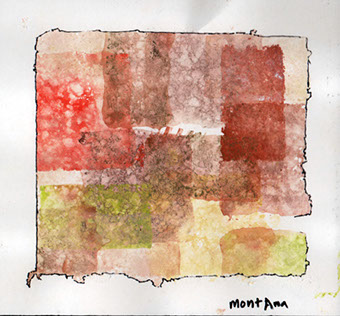
Montana
By: Mike Thies
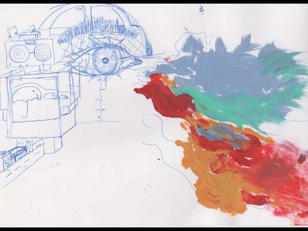
The eye
By: Yuri/Sunmin
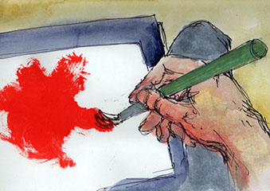
Self portrait of hand
By: Michele De Maria
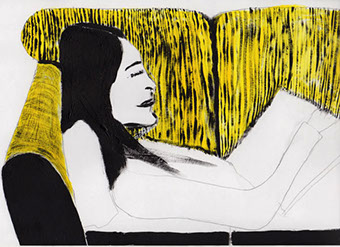
The Couch
By: Randy Bergida
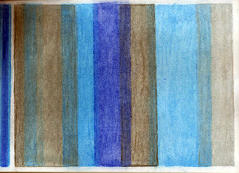
Palette Shift
By: Mike Thies
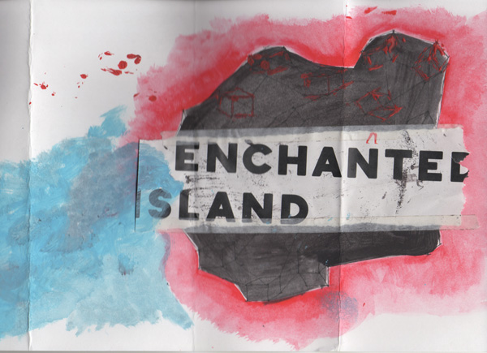
Enchanted Island
By: Yuri Myamoto
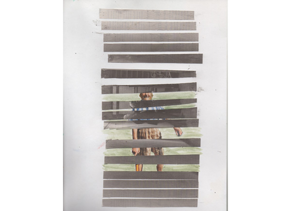
Moonshine
By: Topu Lyo
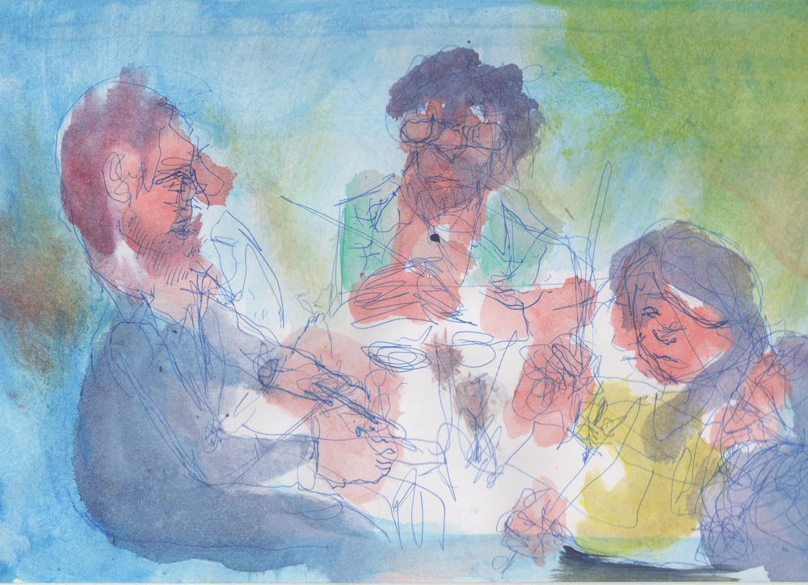
chillin
By: Michele De Maria